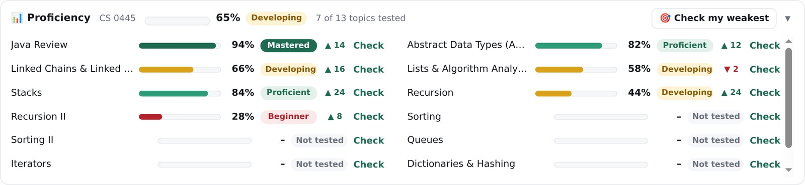
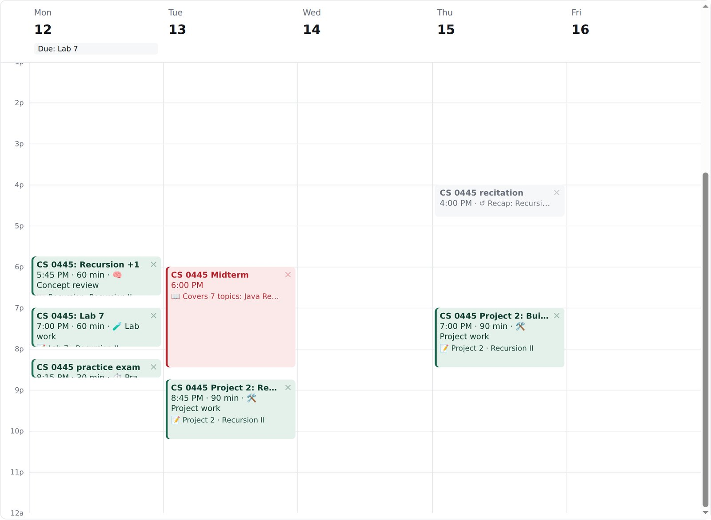
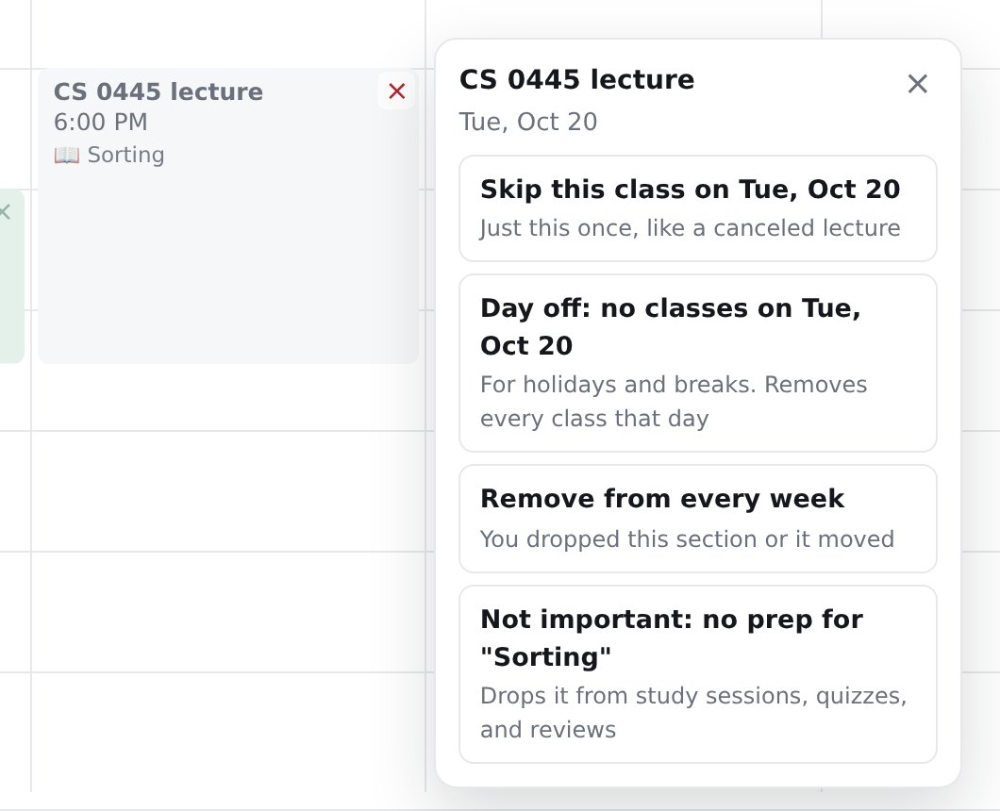

Your syllabus, planned into your actual week.
@me is a Chrome extension that reads your syllabus, schedules study time around your classes and Google Calendar, and moves things when your week changes.
Free and open source. Powered by Google Gemini's free tier. Your data stays in Chrome.
Heads up! "Dentist" overlapped your study time, so I moved Project 2 to 6:30 PM.
How it works
Three steps, and the third one never stops.
Bring your classes
Import a syllabus as a PDF, Word file, or pasted text, connect Canvas, or paste your class schedule. @me finds every exam, lab, project, lecture topic, and grade weight.
Get a plan that fits
Study sessions land around your classes and Google Calendar events, before your bedtime, with more time for the exams that count most. Projects start the day they're assigned.
Let it keep up
Add an event and @me moves the session that clashed. Quizzes from your own slides show what you know, and the plan shifts toward what you don't.
Built around how classes actually work
Not a to-do list with reminders. @me knows what's on the exam, what it's worth, and how well you understand it.
Reads the class you're taking
Lecture topics, recitation sections, holidays, and grade weights. An old syllabus can move to this semester on the same weekdays.
Lives in Google Calendar
Study sessions, class times, and deadlines each get their own calendar, with reminders. Your own events stay untouched.
Practice that looks like your exams
CS quizzes with real code, and practice sets with free-response model answers, written from your slides and notes.
Shows what you know
A proficiency bar for every topic, built only from scored questions. A five-question self-check is one click away.
Starts projects early
Big assignments get milestone sessions from the day they're assigned: plan, build, test, and submit.
Skips what doesn't matter
Give a gen-ed no study time, skip a session, or mark a topic as not important, and that time goes where it counts.
Keeps you focused
During a session, YouTube, Instagram, TikTok, and Reddit are blocked until the timer ends.
Undo anything
Every change can be undone, and Google Calendar follows along. Every session also explains why it's at that time.
Your week, explained
Every block says what it covers, and a red ❗ tells you when @me changed something on its own.



Your data stays with you
@me has no servers of its own, so there's nowhere for your data to go.
- Everything @me knows is stored in Chrome on your computer. Remove @me from Chrome and it's all gone.
- Google Calendar is read to plan around your events. @me only edits the calendars it creates, and never sends your event details to an AI service.
- AI features use your own free Gemini API key, sent straight from your browser to Google.
- No ads, no tracking, and no selling your data.
Get @me
Free for Google Chrome on Windows, Mac, Linux, and Chromebooks. Installing takes about two minutes.
Version 1.2.0, a small zip file. Also on GitHub.
@me isn't on the Chrome Web Store yet, so you install it with Chrome's Developer mode. It's safe: you can see every line of its code on GitHub, and you can remove it anytime.
What you'll need
- Google Chrome
- A Google account, to connect Google Calendar
- Optional: a free Gemini API key from Google AI Studio, for reading PDFs and writing quizzes. @me works without one.
Unzip it
Open the download. You'll get a folder called
atme-extension. Move it somewhere it can stay, like your Documents folder.Turn on Developer mode
Open
chrome://extensionsin Chrome and switch on Developer mode at the top right.Load @me
Click Load unpacked and choose the
atme-extensionfolder.Open it
Pin @me from the puzzle-piece menu, click it, and choose Open @me. Type
/helpto see everything it can do. The setup guide covers your Gemini key, Google Calendar, and Canvas.